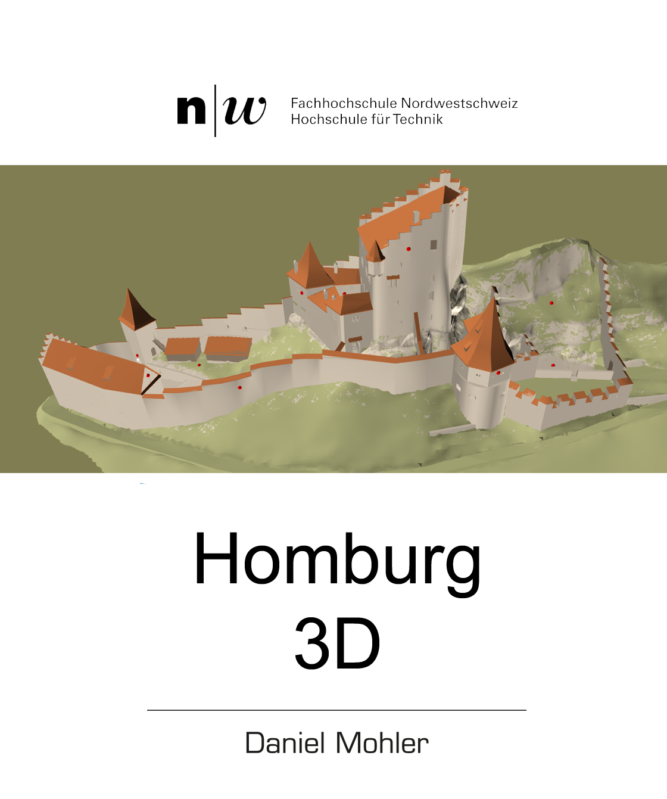

Über das Projekt Homburg 3D

Idee und Auftraggeber: Daniel Mohler- Schmid, 4448 Läufelfingen mehr
Ziel:
Die lokale Geschichte der „Homburg“ unseren Schüler auf eine neue, spannende und lehrreiche Art und
Weise näher zu bringen. Lehrpersonen wie auch Schüler lernen die Möglichkeiten von Technik und Informatik
durch eigene Erfahrung kennen.
Auch werde ich immer wieder gefragt wie ich auf solche Ideen komme.
Ganz einfach, in dem ich mich als Vater für die Schulthema und wie diese vermittelt werden interessiere.
„Kommen die Schuler beim entsprechenden Thema nicht auf die Homburg, bringe ich ihnen diese ins Web.“
Mein Dank:
- Der technischen FHNW, Brugg- Windisch, dafür dass ich mit ihnen zusammen bereits das 3. Projekt realisieren durfte.
- Herr R. Marti und Herr A. Fischer Archäologie BL, dafür dass sie mir die 3D Daten zur Verfügung stellten, und mich fachlich unterstützten.
- Kreisschule Homburg, dass wir den ersten Test an meiner Zielgruppe, den Lehrern und Schülern, testen dürften. Die aus der am Schluss on-line durchgeführten Umfrage resultierenden Erkenntnisse setzten die beiden Studenten, Herr T. Gediga und Herr A. Müller um.
- Herr Zinniker, Amt für Volksschulen BL, dafür dass wir eine kantonale Lehrer- und Schüler-Umfrage durchführen durften. Deren Inputs wir in einem weiteren Projekt versuchen umzusetzen.
Entwickelt durch:
- Timothy Gediga, Informatik-Student FHNW Brugg-Windisch
- Andreas Müller, Informatik-Student FHNW Brugg-Windisch
Betreuer: Prof. Dr. Stefan Arisona, FHNW Brugg-Windisch
Verwendete Icons: